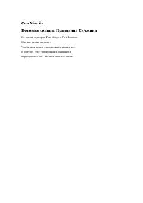

ПСHarbiy xizmatchi va shifokorning taqdir taqozosi bilan bog'langan murakkab sevgi qissasi.
Ushbu roman mashhur koreys seriali asosida yozilgan bo'lib, harbiy xizmatchi va shifokor o'rtasidagi murakkab sevgi qissasini hikoya qiladi. Asar bosh qahramonning yo'qotishdan keyingi kechinmalari va o'tmish xotiralari bilan kurashini tasvirlaydi.